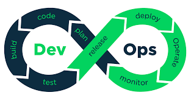

DevOps is a cultural movement where the software industry is trying to break down the barrier between IT operations and Software Developers. The natural pull between getting new functionality going and keeping the lights on has kept some great products from becoming advanced. DevOps try's to fill this gap with a few key areas.

Process: Building on agile process, teams work together.
Automation: Speeding up development without sacraficing quality
Culture: Collaboration and experimentation
Monitoring: Data driven decisions and actions.